A beta plan for a Bruja Canyon trip in Big Bend National Park. Info taken (and in some cases copied) from various online sources, including ropewiki.com and summitpost.org.
Overview
Bruja Canyon is a technical slot canyon which runs SE off Mesa de Anguila in the far west corner of Big Bend NP, TX. Based on a winter passage under normal dry conditions, it may be classified as 3BIII but does require some natural anchor making and two difficult potholes. But as with all desert slot canyons, conditions can vary with season and change very quickly.
Summary
This is an out-and-back canyon. The approach/exit is 3.3 miles each way and the canyon itself is 0.2 miles for a total of 7 miles.
Main raps
- Rap 1: 100 ft, two stages. Anchor off two chockstones.
- Rap 2: 35 ft, natural anchor off small arch.
- Rap 3: Meat anchor/downclimb
Summitpost lists some other smaller rappels, but these will likely be bypassable by downclimbing/meat-anchoring where necessary.
Approach
From your car/campsite at Terlingua Abajo, follow Terlingua Creek north for fifteen minutes. Branch off NW up a wash, and follow this for 15 minutes. Soon you will come to a plain of firm-packed silt/sand/mud stretching for over two miles to the mouth of Bruja. Follow this to the canyon.
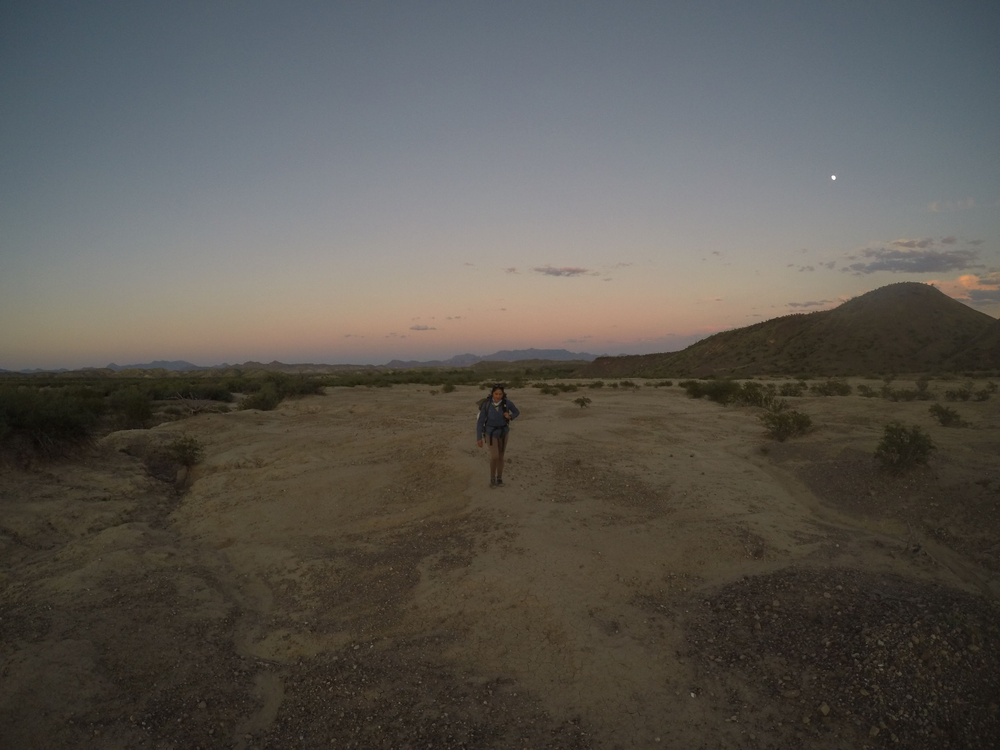
Figure 1: The wash on the approach.
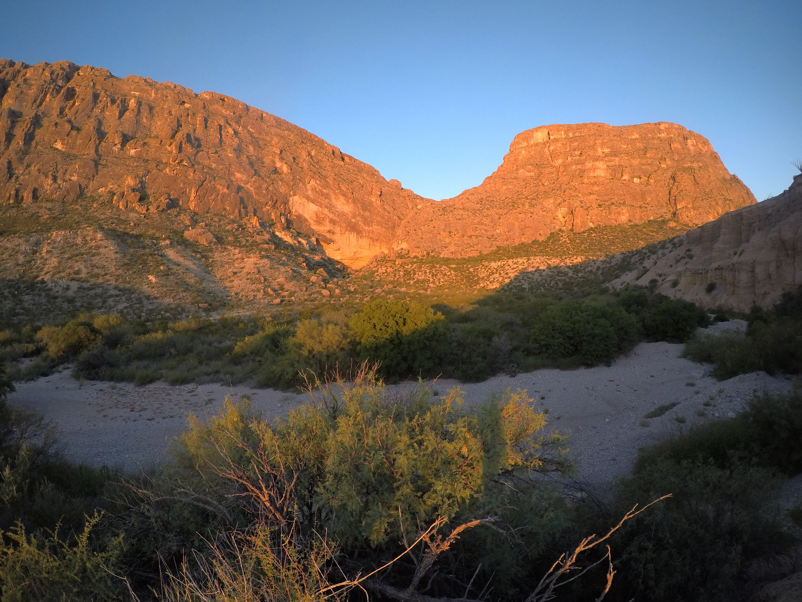
Figure 2: The mouth of Bruja at dawn.
The climb
Once near the mouth of Bruja, you will need to complete a class V rock climb on the SE-facing wall on the north side of the canyon. Look carefully, and you will see a blue webbing anchor tied about 100 feet up. The first person must free climb an entire pitch of 5.0–5.2 limestone to the anchor. Rock shoes are not needed. If you can top-rope a 5.7, you should be fine on this climb. If sketched out, downclimbing should be easy enough. Once at the anchor, set a belay for your partners.
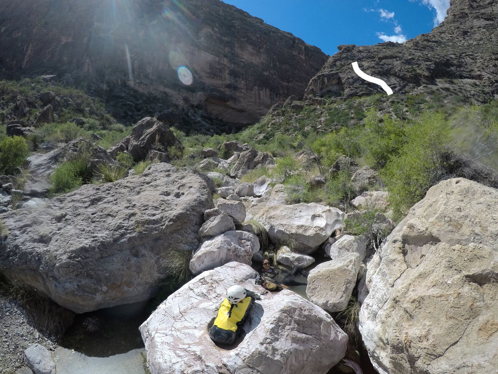
Figure 3: The climb at the mouth of the canyon.
Downclimb to canyon
After completing the rock climb, continue hacking up the hill until it levels out and becomes a shelf. Stay close to the rim of the canyon, and you will eventually find a faint trail. Follow this for 15 minutes, carefully searching for the first place to downclimb into the canyon.
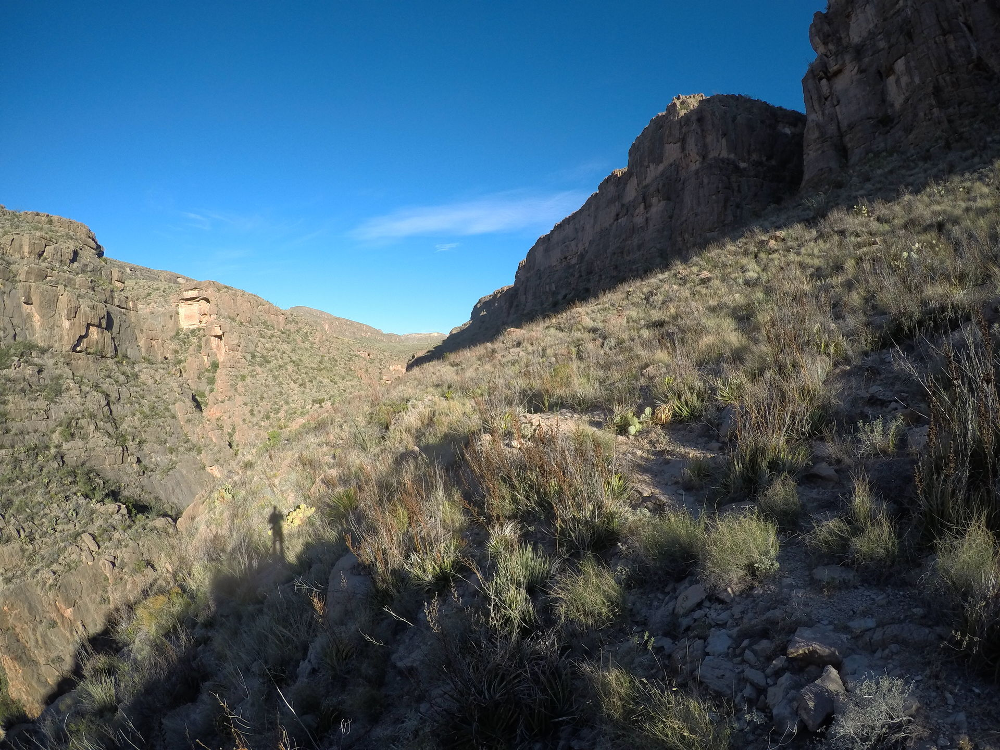
Figure 4: The faint trail leading away from the top of the climb.
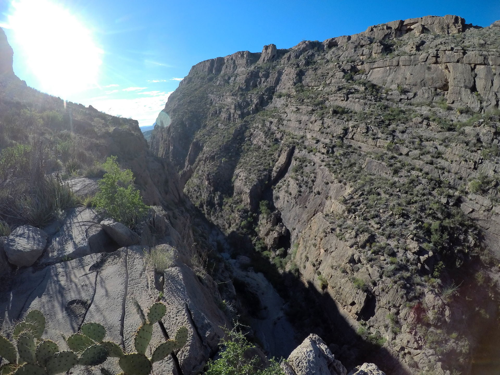
Figure 5: Bruja Canyon from above.
When you see a slope which isn’t a sheer cliff open up on your left, begin the class III downclimb.
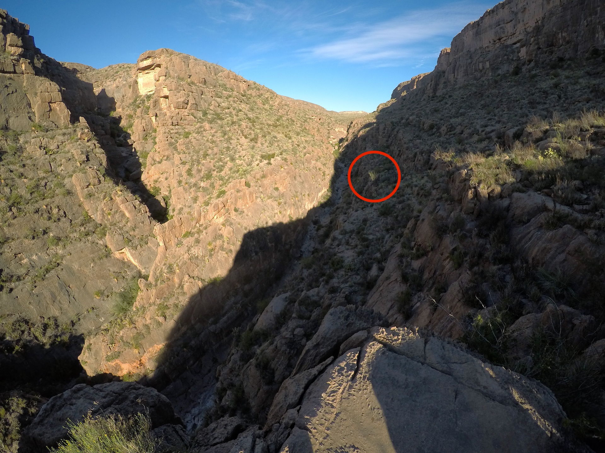
Figure 6: The downclimb starts here. Zig-zag your way down the slope to the canyon floor.
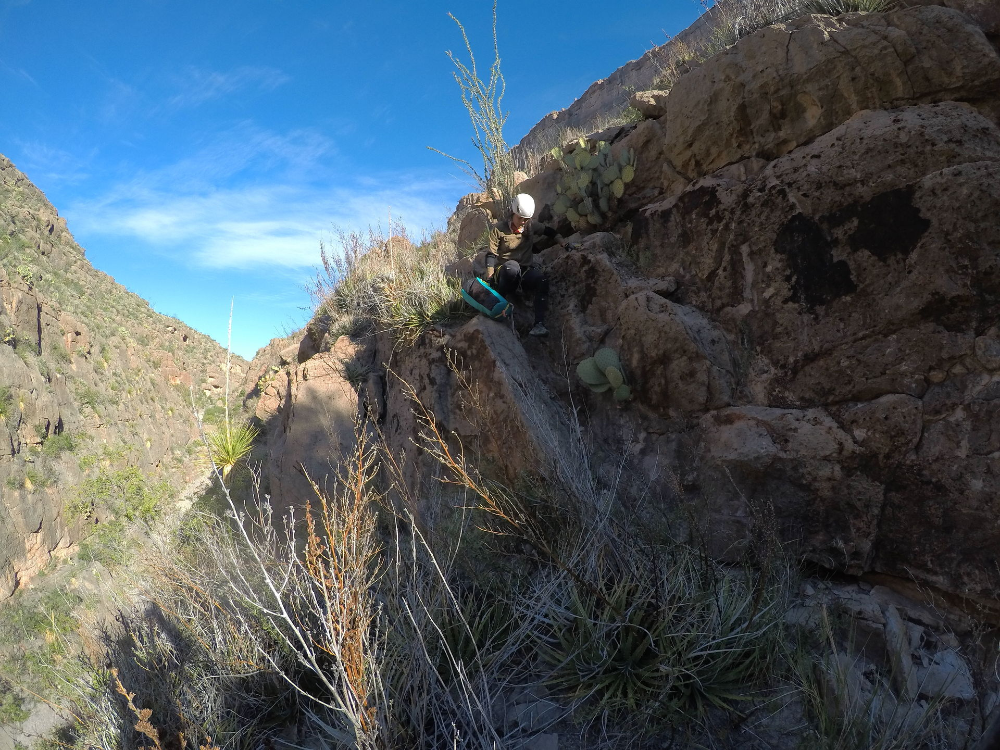
Canyon
First walk through smooth white boulders for 15 minutes. Eventually you’ll come upon a hallway of rappels.
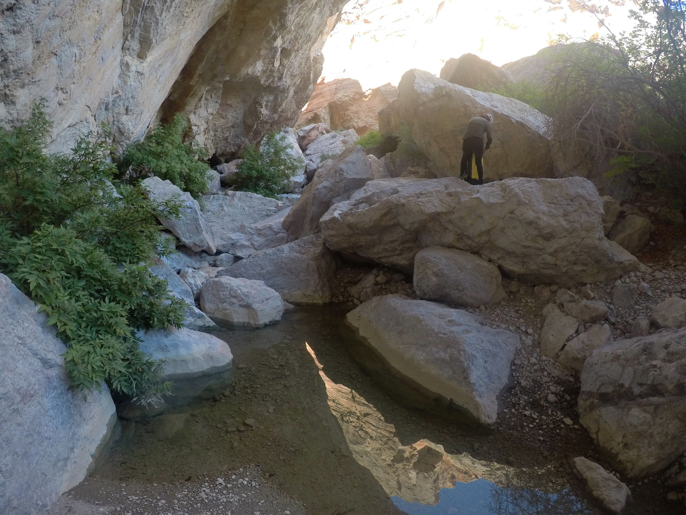
Figure 7: Small pools near the mouth.
First rappel
First rappel anchors off of two chockstones. Need 100 ft total, 30 ft to first pothole and then down another 20 ft into the second pothole.
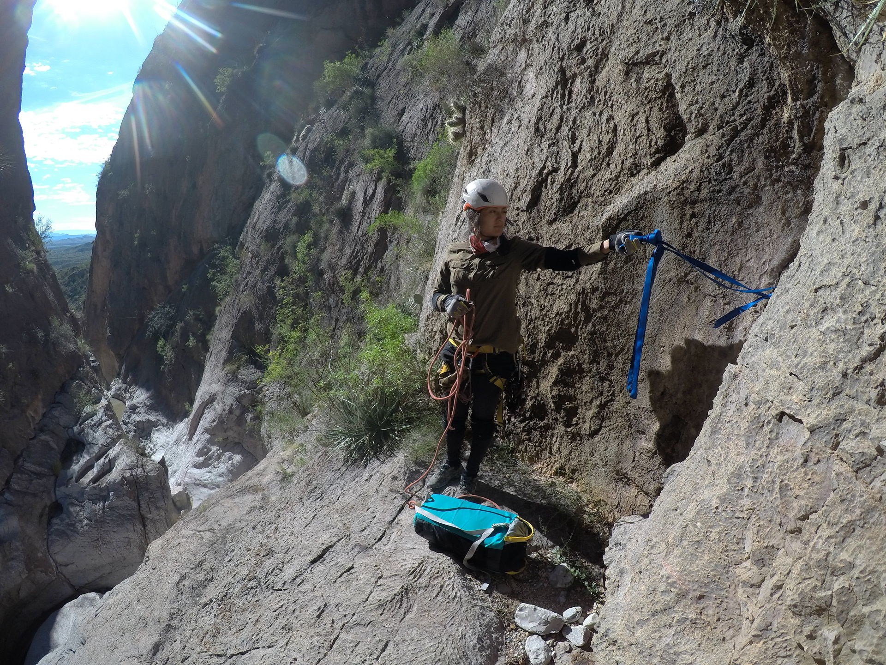
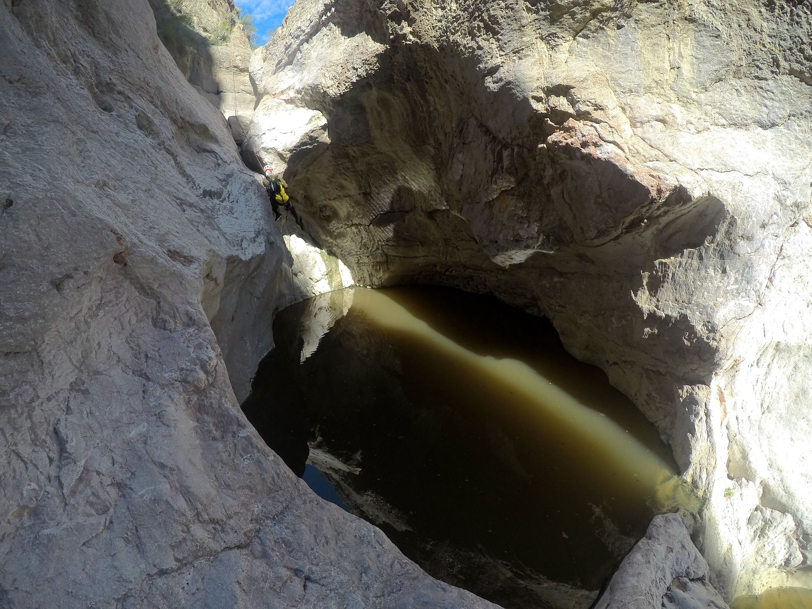
Figure 8: End of the first stage.
Second rappel
Second rappel anchors off a small natural arch 35 ft into a deeper pothole (still not a keeper).
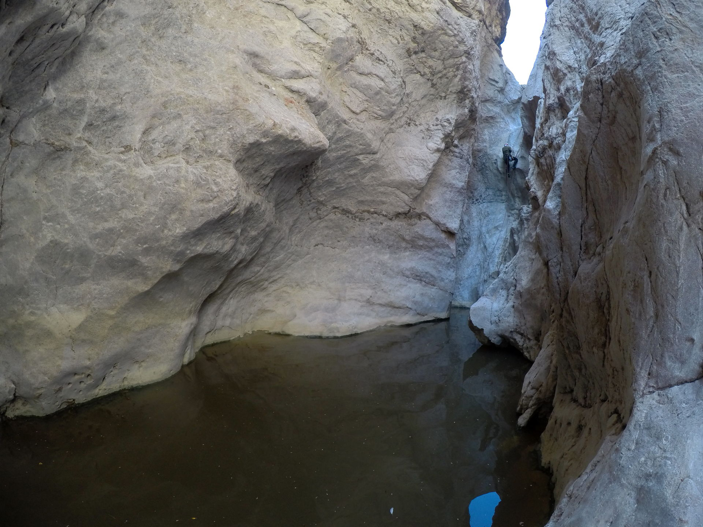
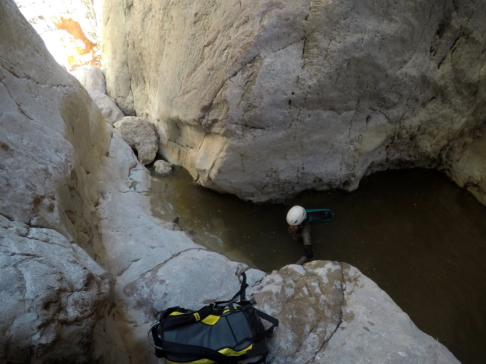
Figure 9: Exiting the pothole below rap 2.
Third rappel
Third rappel is a meat-anchor downclimb combo.
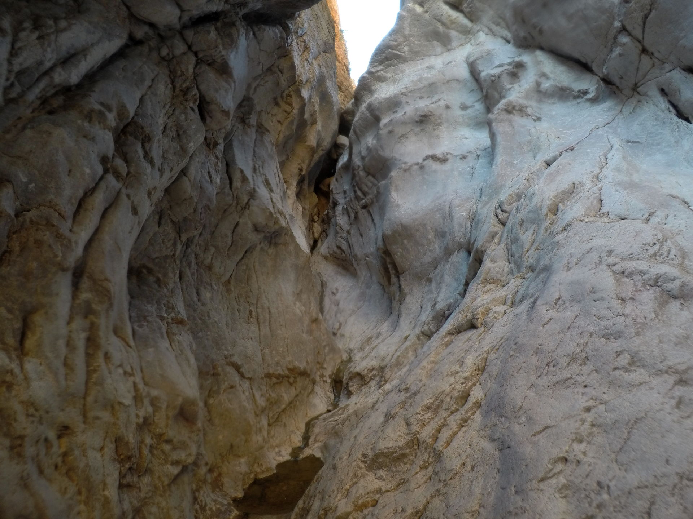
Note on potholes and bees
The potholes here should never be true keeper potholes, but conditions change. To be safe, be sure to know how to tie your rope to your bag to throw a potshot, and never pull your rappel rope until one member is out of the pothole.
The main pothole danger is bees. In several potholes, over 100 bees were swarming each exit, despite no hives being in the canyon. Lots and lots of splashing scared most away. Do not do this canyon if you are allergic to bees. If you insist, please bring an epi-pen and show your partners how to use it. We did not get stung, despite being in close proximity to hundreds of bees for over an hour in the pothole section.
Exit
Return back to Terlingua Abajo campsite the way you came out of the mouth of the canyon.
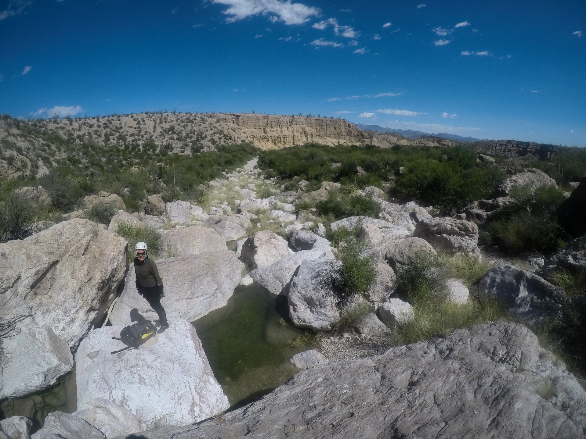
Figure 10: The end of the canyon.